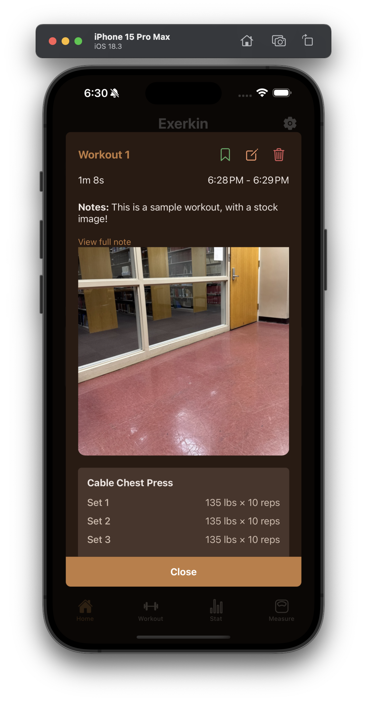
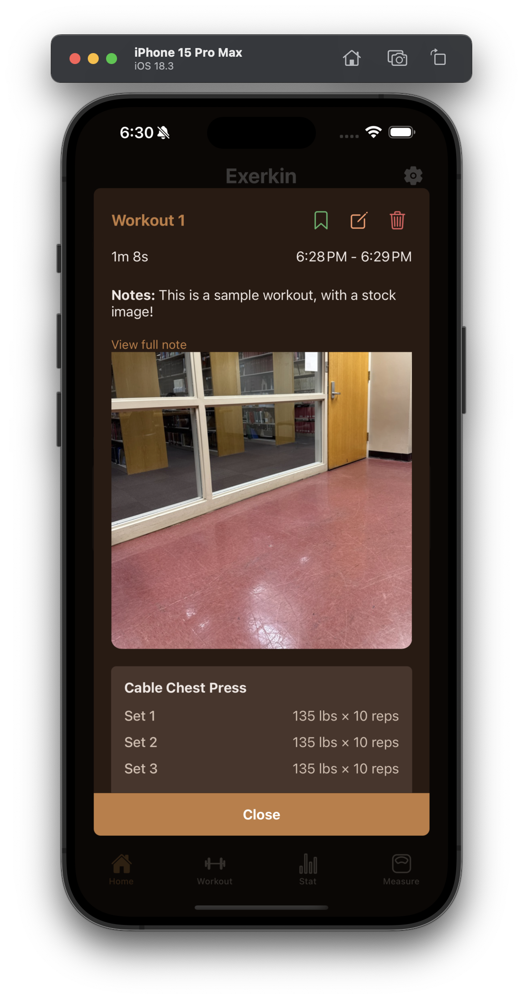

Brian Merino
University of Tennessee Knoxville
Computer science student
About Me
I'm a senior computer science student at the University of Tennessee, Knoxville. I enjoy building mobile apps that blend technology with everyday life; like Exerkin, a social fitness tracker. I’m passionate about clean UI, meaningful user experiences, and solving problems that make people’s lives better.
My Projects
Exerkin
(React Native, Firestore, Realm, Expo)
Group project. A social workout tracker app where users can log workouts, share progress, and connect with friends. Currently, the social aspect of the project is under construction. The purpose of this project is to encourage users to stay consistent with their workouts, as well as to keep up with the progress of friends. We are aiming to get onto the app store within 2025.
 

Group project. For this project, my team and I created a maze-type RPG. It includes a main character and enemies. The enemies were created to use the A* search algorithm to chases enemies, even around objects. We were able to learn how to move characters, as well as animating sprites. It was great to work with a game engine and to learn how games are made.
Group project. This project consisted of using machine learning methods to attempt and predict a super bowl winner. We used many models to determine which would be the best. The dataset we used came from kaggle and contained information from the years 1999 - 2019. Our best model ended up only being able to correctly guess the winner 30% of the time. This project aided in learning about different models and what their strengths and weaknesses are.
Solo project. This project was developed through an internship at ORNL. It consisted of developing a web application for querying malware samples from a MongoDB instance. The query returned information of the selected sample.